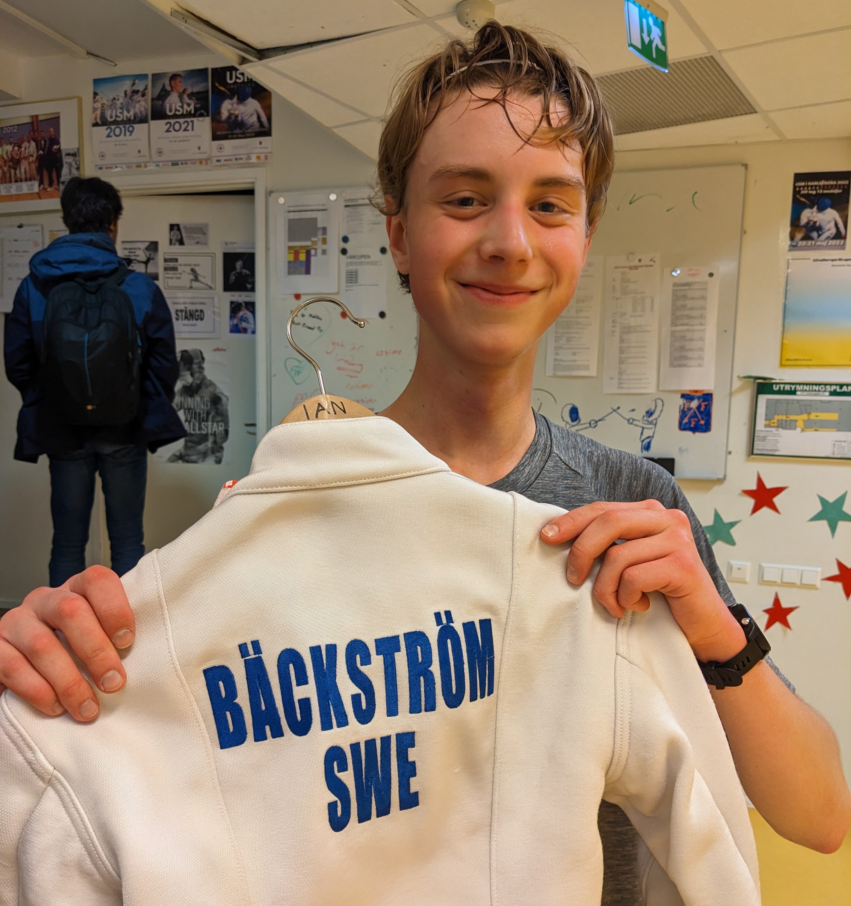
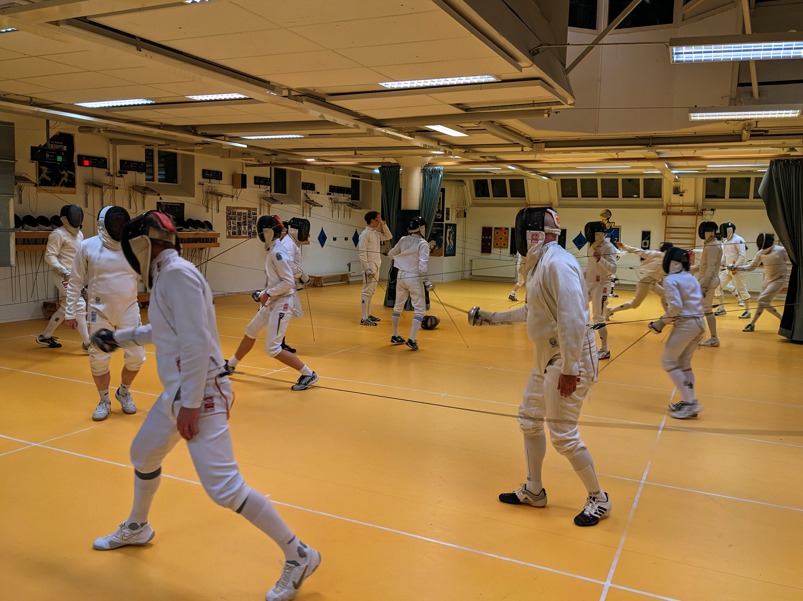
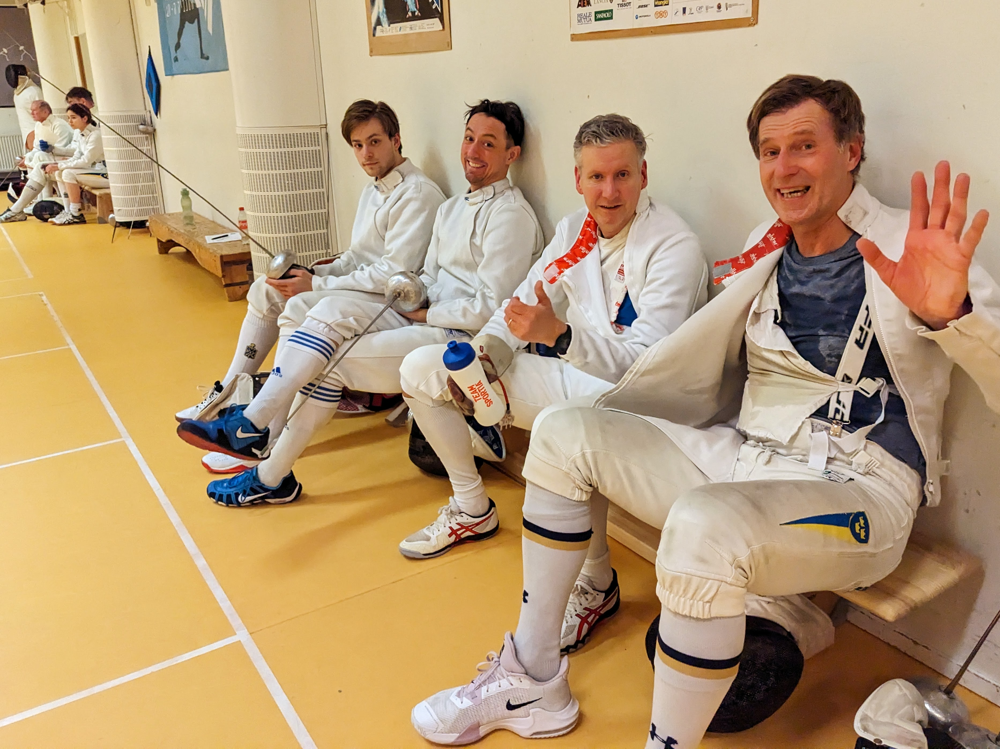
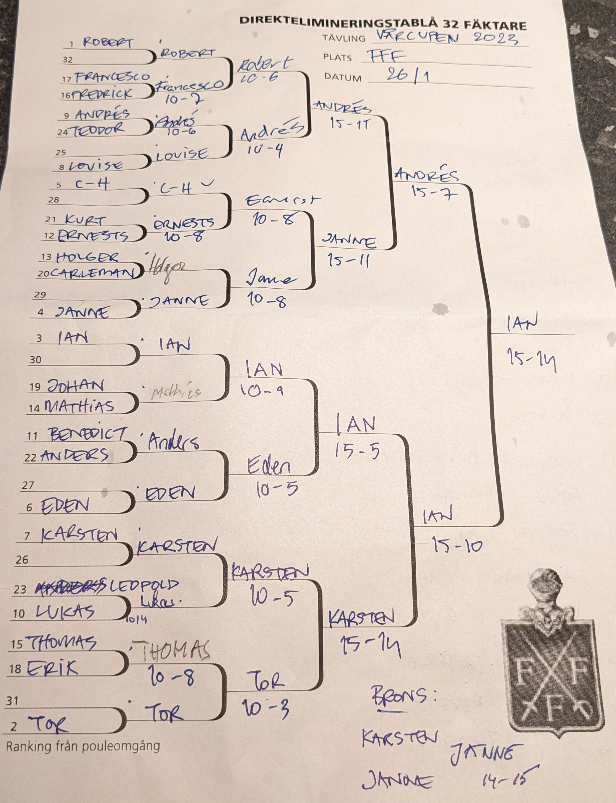

Att Vårcupen är populär råder det ingen tvivel om, inte mindre än 24 ivriga fäktare kastade sig huvudstupa in i den första deltävlingen. Startfältet pryddes av kända namn såsom Kurt, Lucas, Benedict och Louise, bara för att nämna några. Ett namn drog till sig publikens blickar var självklart Karsten som sedan i höstas gjort en fokuserad tränings- och tävlingsplanering med Vårcupen i fokus.
Första omgången

Som vanligt började tillställningen med poulefäktning där deltagarna tampades uppdelade i 4 pouler med KM som grund för rankingen. Planenligt utmärkte sig tidigt Tor som gjorde rent i sin grupp, CH, Janne och Ian gick också starkt med blott en förlust vardera. Eden briljerade också och hade, om det inte varit för Ian, skördat samtliga segrar i sin poule. Men över alla andra reste sig Robert som sammanlagt under hela första omgången endast släppte in 6 stötar och därmed gick in i direktelimineringen som 1:a rankad och en självklar favorit till segern.

Direktelemineringen
Vi nämnde tidigare att Karsten sedan i höstas inte synts till på grund av en helhjärtad satsning på Vårcupen och för detta fick han väl betalt. Den rost som kunde anas i poulfäktningen var nu borta och istället gick han från klarhet till klarhet med segrar över Lucas och därefter en uddastötsseger mot Tor och var därmed vidare till semifinal.
Robert som hade stormat igenom tävlingens första del fortsatte sin framfart med en vinst mot Francesco. Tyvärr gjorde han därmed också slut på mycket av sina krafter och i brist på tillräcklig vila förlorade Robert knappt första kvartsfinalmatchen.
I en annan kvartsfinal möttes Ernest och Janne. Denna gång var Janne den starkare fäktaren och kunde glädja sig åt en plats i semifinalen.
Den 3:e rankande Ian stod över första matchen och i 16-delen fick han anstränga sig till det yttersta för att tvinga sig förbi Mathias med en uddastöt. Väl med ångan uppe besegrade Ian också en av kvällens stora sensationer Eden, som inte bara fäktat bra i pouleomgången utan även följt upp med en seger över Anders.
Så var det dags för semifinaler. I den första drabbade Karsten och Ian samman. Även om Karsten var stark så var Ian ett strå vassare och lyckades till sist manövrera ut Karsten. För Karstens del innebar det att nästa anhalt var en dust med Janne, där Janne, med minsta möjliga marginal knep 3:e platsen.
Väl i finalen fanns det inget som kunde rubba Ian och han tog med ett glatt leende segern i Vårcupens första deltävling. En värdig segrare, stort Grattis Ian!
Här har vi den slutgiltiga listan:
| Resultat efter den 1:a deltävlingen | ||
| Namn | Placering | Poäng |
|---|---|---|
| Ian Bäcksröm | 1 | 32 |
| Andrés Gomez | 2 | 26 |
| Jan Tivenius | 3 | 21 |
| Karsten Kaping | 4 | 19 |
| Robert Brolin | 5 | 14 |
| Tor Forsse | 6 | 14 |
| Eden Renda | 7 | 14 |
| Ernest Cimborevics | 8 | 14 |
| C-H Wendt | 9 | 8 |
| Louise Ulltjärn | 10 | 8 |
| Lukas Marcos | 11 | 8 |
| Holger Claesson | 12 | 8 |
| Mathias Elmfeldt | 13 | 8 |
| Thomas Schiöler | 14 | 8 |
| Francesco Pelletta | 15 | 8 |
| Anders Brunelius | 16 | 8 |
| Benedict Chambers | 17 | 4 |
| Frederick Marelius | 18 | 4 |
| Erik Lahomaa | 19 | 4 |
| Johan Ström | 20 | 4 |
| Rusu Carloman | 21 | 4 |
| Curt Benkestock | 22 | 4 |
| Leopold Germer | 23 | 4 |
| Teodor Dahlin | 24 | 4 |
Nu när den nyan generationen i form av Ian har visat vägen förväntar vi oss inget annat än att se en ny ung segrare vid Vårcupens 2:a deltävling som brakar loss om en knapp månad - den 23 februari.
Träna hårt fram till dess!
För den nyfikne publicerar vi också den fullständiga tablån.
